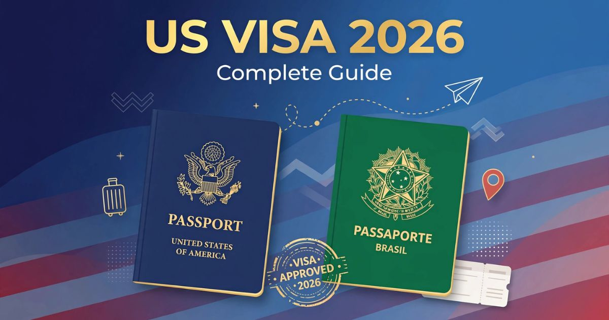

Como tirar o visto americano em 2026: guia completo e atualizado
Introdução: por que você precisa do visto americano
O visto americano é um dos documentos mais desejados e, ao mesmo tempo, mais temidos pelos viajantes brasileiros. Os Estados Unidos são um dos destinos mais procurados por turistas, estudantes e profissionais brasileiros, seja para conhecer cidades icônicas como Nova York, Orlando e Miami, seja para fazer intercâmbio, participar de eventos ou visitar familiares. Em 2026, o processo para obtenção do visto americano continua sendo rigoroso, mas com algumas atualizações importantes que todo solicitante precisa conhecer.
Diferentemente do passaporte, que é um documento de identidade internacional, o visto é uma autorização de entrada concedida pelo país de destino. Isso significa que, mesmo com o passaporte em mãos, você só poderá entrar nos Estados Unidos se tiver um visto válido e compatível com o propósito da sua viagem. O processo envolve desde o preenchimento de formulários detalhados até uma entrevista presencial no consulado ou embaixada americana.
Muitos brasileiros acabam desistindo da viagem por medo da burocracia ou por acreditarem que o visto será negado. No entanto, com as informações corretas e uma preparação adequada, as chances de aprovação são altas. Neste guia completo, você encontrará tudo o que precisa saber para tirar seu visto americano em 2026: desde os tipos de visto existentes até o passo a passo do processo, documentos exigidos, dicas para a entrevista e respostas para as principais dúvidas dos viajantes.
Nosso objetivo é desmistificar o processo e mostrar que, com organização e atenção aos detalhes, você pode obter seu visto americano de forma tranquila e segura. Afinal, viajar para os Estados Unidos é uma experiência incrível, e a documentação correta é o primeiro passo para realizar esse sonho.
Tipos de visto americano: qual é o seu?
Antes de iniciar o processo, é fundamental entender qual tipo de visto você precisa. Os Estados Unidos possuem diversas categorias de vistos, cada uma destinada a um propósito específico. Os mais comuns para brasileiros são:
Visto B1/B2 (Turismo e Negócios) — É o visto mais solicitado por brasileiros. O visto B1 é destinado a viagens de negócios, como reuniões, conferências e feiras. Já o visto B2 é para turismo, férias, visitas a familiares e tratamento médico. Na prática, a maioria dos solicitantes recebe o visto B1/B2 combinado, que permite ambas as atividades. Este visto tem validade de até 10 anos para brasileiros, com múltiplas entradas.
Visto F1 (Estudante) — Destinado a estudantes que desejam cursar ensino superior, pós-graduação, cursos de idiomas ou programas de intercâmbio acadêmico nos Estados Unidos. Exige comprovação de matrícula em uma instituição de ensino americana e capacidade financeira para se manter durante o período de estudos.
Visto J1 (Intercâmbio Cultural) — Para participantes de programas de intercâmbio cultural, como Au Pair, Work and Travel, estágios e pesquisas. É um visto temporário que geralmente tem duração limitada ao período do programa.
Visto H1B (Trabalho) — Para profissionais qualificados que conseguiram uma oferta de trabalho nos Estados Unidos em áreas como tecnologia, engenharia, medicina e finanças. Este visto é concedido por um período inicial de 3 anos, com possibilidade de renovação.
Visto L1 (Transferência de Funcionários) — Para funcionários de empresas multinacionais que são transferidos para uma filial ou matriz nos Estados Unidos. É um visto corporativo que exige comprovação de vínculo empregatício e tempo de serviço na empresa.
Para a maioria dos viajantes brasileiros, o visto B1/B2 é o mais adequado. Neste guia, vamos focar principalmente nessa categoria, que é a mais solicitada e a que atende à grande maioria dos turistas e viajantes a negócios.
Quem precisa do visto americano
Todo cidadão brasileiro que deseja entrar nos Estados Unidos precisa de visto, com exceção de quem possui cidadania americana ou green card. Não há isenção de visto para brasileiros, diferentemente de cidadãos de países europeus que participam do programa Visa Waiver.
Turismo e lazer — Se você planeja visitar pontos turísticos, parques temáticos (Disney, Universal Studios), cidades como Nova York, Miami, Las Vegas ou fazer um road trip, precisa do visto B2.
Visitas a familiares — Se você tem parentes morando nos Estados Unidos e deseja visitá-los, o visto B2 é o indicado. Nesse caso, é importante ter vínculos fortes com o Brasil para comprovar que você pretende retornar após a visita.
Negócios — Para participar de reuniões, feiras, congressos ou fechar contratos, o visto B1 é necessário. É importante que a atividade não seja caracterizada como trabalho remunerado nos Estados Unidos.
Estudos de curta duração — Cursos com duração inferior a 18 horas semanais podem ser realizados com o visto B2. Para cargas horárias maiores, o visto F1 é obrigatório.
Tratamento médico — Brasileiros que buscam tratamentos médicos nos Estados Unidos também precisam do visto B2, com documentação comprobatória do tratamento e capacidade financeira para custeá-lo.
É importante ressaltar que o visto americano não garante a entrada no país. A decisão final é do oficial de imigração na fronteira, que pode negar a entrada mesmo com visto válido caso identifique alguma irregularidade ou suspeita. Por isso, é fundamental viajar com toda a documentação em ordem e respostas claras sobre o propósito da viagem.
Documentos necessários para o visto americano
A documentação é um dos pilares do processo de solicitação do visto americano. Quanto mais organizada e completa for a sua documentação, maiores são as chances de aprovação. Confira a lista completa dos documentos exigidos e recomendados:
Documentos obrigatórios:
- Passaporte válido — com validade mínima de 6 meses após a data de retorno ao Brasil. O passaporte deve ter pelo menos uma página em branco para a colocação do visto.
- Comprovante de pagamento da taxa DS-160 — o recibo de pagamento da taxa de solicitação do visto (chamada de MRV).
- Foto 5x7 — com fundo branco, recente (tirada nos últimos 6 meses) e seguindo as especificações do Departamento de Estado americano.
- Comprovante de agendamento — o documento gerado após o agendamento da entrevista no consulado ou embaixada.

Documentos necessários para solicitar o visto americano em 2026
Documentos complementares (altamente recomendados):
- Comprovantes de vínculo com o Brasil — carteira de trabalho, contracheques, declaração de imposto de renda, comprovante de matrícula em curso ou faculdade, escritura de imóvel, contrato de aluguel.
- Comprovantes financeiros — extratos bancários dos últimos 3 a 6 meses, investimentos, cartões de crédito com limite compatível com a viagem.
- Roteiro de viagem — com datas de entrada e saída, cidades que serão visitadas, reservas de hotéis e passagens aéreas (não é obrigatório comprar antes, mas ter um planejamento ajuda).
- Documentos profissionais — carta da empresa autorizando a viagem e informando o cargo, tempo de serviço e data prevista de retorno ao trabalho.
- Declaração de IRPF — a declaração do Imposto de Renda dos últimos anos comprova sua situação financeira e vínculos com o Brasil.
Lembre-se: o oficial consular não pedirá todos esses documentos na entrevista, mas é importante tê-los organizados em uma pasta para apresentar caso seja solicitado. A organização e a clareza na apresentação dos documentos transmitem credibilidade e seriedade.
Passo a passo para tirar o visto americano em 2026
O processo de solicitação do visto americano é dividido em etapas bem definidas. Seguir cada uma delas com atenção é fundamental para evitar erros e atrasos. Confira o passo a passo completo:
- Preencha o formulário DS-160 — Este é o formulário eletrônico de solicitação de visto. Deve ser preenchido online no site do Departamento de Estado americano (ceac.state.gov) com todas as informações pessoais, profissionais e de viagem. É o documento mais importante de todo o processo.
- Pague a taxa MRV (Machine Readable Visa) — A taxa para solicitação do visto B1/B2 é de aproximadamente US$ 160 (valor atualizado anualmente). O pagamento pode ser feito em reais, via boleto bancário, no site da CASV (Central de Atendimento ao Solicitante de Visto).
- Agende a entrevista — Após o pagamento, você deve agendar a entrevista no consulado ou embaixada americana mais próxima. No Brasil, os postos consulares estão em Brasília, Rio de Janeiro, São Paulo, Recife e Porto Alegre. A disponibilidade de vagas varia, sendo recomendado agendar com pelo menos 2 a 3 meses de antecedência.
- Compareça à CASV para coleta de dados — Antes da entrevista, você deverá comparecer à CASV para a coleta de dados biométricos (impressões digitais e foto). Esse é um procedimento obrigatório e ocorre em um local separado do consulado.
- Participe da entrevista no consulado — Este é o momento mais temido, mas também o mais importante. A entrevista dura poucos minutos e o oficial consular fará perguntas sobre sua vida, trabalho, viagem e vínculos com o Brasil. É essencial ser honesto, claro e objetivo.
- Acompanhe o status do visto — Após a entrevista, você pode acompanhar o status do seu visto pelo site do consulado. O prazo para aprovação e emissão do visto varia de 3 a 10 dias úteis.
- Retire o visto — Quando aprovado, o visto é carimbado no passaporte. A retirada pode ser feita pessoalmente ou pelos Correios, mediante pagamento de taxa de entrega.
Como preencher o formulário DS-160
O DS-160 é o formulário mais importante da sua solicitação de visto. As informações fornecidas nele serão a base para a entrevista e a decisão do oficial consular. Por isso, é essencial preenchê-lo com atenção e honestidade.
Dicas para preencher o DS-160:
- Use um navegador compatível — O site funciona melhor com Google Chrome ou Mozilla Firefox. Tenha paciência, pois o sistema pode ficar lento.
- Responda todas as perguntas com precisão — Não omita informações nem invente dados. As informações serão verificadas e qualquer inconsistência pode levar à negativa.
- Tenha seu passaporte em mãos — Você precisará dos dados exatos do passaporte, incluindo número, data de emissão e validade.
- Salve o número de confirmação — Ao final, você receberá um número de confirmação (Application ID). Anote-o e guarde-o com segurança. Você precisará dele para o agendamento da entrevista.
- Confira todos os dados antes de enviar — Após o envio, não é possível fazer alterações. Se houver erro, será necessário preencher um novo formulário.
- Leve o comprovante impresso — Na entrevista, você deverá apresentar a página de confirmação do DS-160 com o código de barras.
O preenchimento do DS-160 pode levar de 30 a 60 minutos, dependendo da complexidade das suas informações. Reserve um tempo tranquilo para fazer isso e evite erros por pressa.
A entrevista no consulado: como se preparar
A entrevista é o momento decisivo do processo. Ela dura, em média, de 3 a 5 minutos, mas é nela que o oficial consular decide se seu visto será aprovado ou negado. A preparação adequada é fundamental para aumentar suas chances de sucesso.
O que levar para a entrevista:
- Passaporte válido
- Comprovante de agendamento
- Comprovante de pagamento da taxa MRV
- Página de confirmação do DS-160
- Documentos complementares organizados em uma pasta (extratos bancários, comprovantes de vínculo, roteiro de viagem, etc.)
Perguntas típicas da entrevista:
- "Qual é o propósito da sua viagem?" — Seja claro e específico. Diga se é turismo, negócios, visita a familiares, etc.
- "Para onde você vai e por quanto tempo?" — Informe as cidades que pretende visitar e a duração da viagem. Tenha um roteiro planejado.
- "O que você faz profissionalmente?" — Explique sua profissão, empresa e cargo. Mostre que você tem vínculos com o Brasil.
- "Quem vai custear a viagem?" — Informe se a viagem será custeada por você ou por terceiros. Comprove com extratos bancários.
- "Você já viajou para outros países?" — Se sim, mencione as viagens anteriores. Isso ajuda a construir um histórico de viajante confiável.
Dicas para a entrevista:
- Seja honesto — Mentir no processo é motivo certo para negativa e pode impedir futuras solicitações.
- Seja objetivo — Responda de forma clara e direta. Evite rodeios ou informações desnecessárias.
- Mantenha a calma — A ansiedade é normal, mas tente se manter tranquilo. O oficial consular não está ali para te intimidar.
- Vista-se adequadamente — Use roupas sociais ou casuais-elegantes. Cause uma boa primeira impressão.
- Chegue com antecedência — Recomenda-se chegar 30 minutos antes do horário agendado para evitar imprevistos.
Valores e taxas do visto americano em 2026
Os custos para obter o visto americano incluem diversas taxas e despesas que devem ser consideradas no planejamento da sua viagem. Confira os valores atualizados para 2026:
| Serviço | Valor (US$) | Valor aproximado (R$)* |
|---|---|---|
| Taxa de solicitação (MRV) - B1/B2 | US$ 160,00 | ~ R$ 880,00 |
| Taxa de solicitação (MRV) - F1 / J1 | US$ 160,00 | ~ R$ 880,00 |
| Taxa de solicitação (MRV) - H1B / L1 | US$ 205,00 | ~ R$ 1.130,00 |
| Taxa SEVIS (F1/J1) | US$ 350,00 | ~ R$ 1.930,00 |
| Entrega do visto pelos Correios | ~ US$ 25,00 | ~ R$ 138,00 |
*Valores aproximados com base no câmbio de julho de 2026 (US$ 1,00 ≈ R$ 5,50).
Total estimado para turismo (B1/B2): Aproximadamente R$ 1.018,00 (incluindo taxa MRV e entrega pelos Correios).
Formas de pagamento: As taxas podem ser pagas em reais, via boleto bancário ou cartão de crédito, no site da CASV. O valor é convertido com base no câmbio do dia do pagamento.
Atenção: A taxa de solicitação não é reembolsável em caso de negativa do visto. Por isso, é importante se preparar bem antes de iniciar o processo.
Prazos e validade do visto americano
Os prazos para obtenção do visto americano variam conforme a época do ano e a demanda nos consulados. Em períodos de alta procura (pré-feriados, férias escolares), os prazos podem se estender significativamente.
Prazos médios em 2026:
- Agendamento — de 7 a 60 dias (dependendo da disponibilidade do consulado).
- Análise do DS-160 — de 2 a 5 dias úteis.
- Entrevista — marcada na data disponível no consulado.
- Emissão do visto — de 3 a 10 dias úteis após a aprovação.
- Entrega pelos Correios — de 3 a 5 dias úteis após a emissão.
Validade do visto B1/B2: Para cidadãos brasileiros, o visto de turismo e negócios (B1/B2) tem validade de até 10 anos com múltiplas entradas. Cada entrada permite uma estadia de até 6 meses (a critério do oficial de imigração na fronteira).
Atenção: A validade do visto é diferente do tempo de estadia permitido. Mesmo que seu visto tenha validade de 10 anos, o tempo que você pode ficar nos Estados Unidos é definido pelo oficial de imigração na chegada, geralmente de 1 a 6 meses.
Dicas para aumentar suas chances de aprovação
Com base na experiência de milhares de viajantes e nas orientações de especialistas, reunimos as principais dicas para aumentar suas chances de aprovação no visto americano:
- Comprove vínculos sólidos com o Brasil — Ter emprego estável, família, imóveis, negócios ou estudos no Brasil são os principais argumentos para demonstrar que você pretende retornar ao país.
- Não minta em nenhuma informação — Inconsistências são facilmente detectadas e levam à negativa. Seja sempre honesto e transparente.
- Tenha um roteiro de viagem planejado — Mostrar que você tem um planejamento claro e realista ajuda a convencer o oficial de que sua viagem é legítima.
- Não compre passagens aéreas antes do visto — É recomendado não comprar passagens até que o visto seja aprovado, pois a negativa pode gerar prejuízos financeiros.
- Mantenha a calma na entrevista — A ansiedade é natural, mas a confiança e a clareza nas respostas são fundamentais.
- Organize sua documentação — Leve uma pasta com todos os documentos em ordem. Isso demonstra seriedade e preparação.
- Renove seu visto com antecedência — Se seu visto está próximo do vencimento, inicie o processo de renovação com pelo menos 6 meses de antecedência.
A honestidade é o fator mais importante no processo do visto americano. Nunca tente ocultar informações ou mentir durante a entrevista. Os oficiais consulares são treinados para identificar inconsistências, e uma negativa por fraude pode impedir você de obter qualquer tipo de visto para os Estados Unidos no futuro. Viaje com transparência e planejamento!
❓ Perguntas Frequentes sobre o visto americano
Não. O visto americano não é um direito automático. Cada solicitação é analisada individualmente por um oficial consular, que avalia critérios como vínculos com o país de origem, situação financeira, propósito da viagem e histórico de viagens. A aprovação depende da capacidade do solicitante em comprovar que pretende retornar ao Brasil após a visita.
Em média, o processo completo pode levar de 1 a 3 meses, dependendo da disponibilidade de vagas para agendamento e do tempo de análise do consulado. Recomenda-se iniciar o processo com pelo menos 4 meses de antecedência da viagem para evitar imprevistos.
Sim. A renovação do visto americano pode ser feita antes do vencimento. Em muitos casos, a renovação é mais simples e pode ser feita sem nova entrevista, mediante o programa de "Renovação Automática" ou "Dropbox". A validade do novo visto é contada a partir da data de emissão.
Se seu visto for negado, você pode tentar novamente a qualquer momento. É importante identificar o motivo da negativa (geralmente informado pelo oficial consular) e corrigir as questões apontadas. Em alguns casos, pode ser necessário apresentar novos documentos ou comprovações para uma nova solicitação.
Não é recomendado comprar passagens aéreas antes da aprovação do visto. A negativa pode gerar prejuízos financeiros. O ideal é ter um roteiro planejado e apenas reservar a passagem após a aprovação.
Não. O visto B1/B2 não permite trabalho remunerado nos Estados Unidos. Para trabalhar legalmente, é necessário um visto específico, como o H1B para profissionais qualificados ou o L1 para transferência de funcionários. Qualquer atividade de trabalho com visto de turismo pode resultar em deportação e banimento do país.
Sim. Todos os viajantes, independentemente da idade, precisam de visto para entrar nos Estados Unidos. Bebês e crianças devem ter seus próprios passaportes e vistos. O processo para menores é o mesmo, e a documentação adicional deve incluir autorização dos pais ou responsáveis legais.
Para o visto B1/B2 (turismo e negócios), o custo total atualizado para 2026 é de aproximadamente R$ 1.018,00, incluindo a taxa MRV (US$ 160,00) e a entrega pelos Correios (cerca de R$ 138,00). Os valores podem variar conforme o câmbio do dia do pagamento.